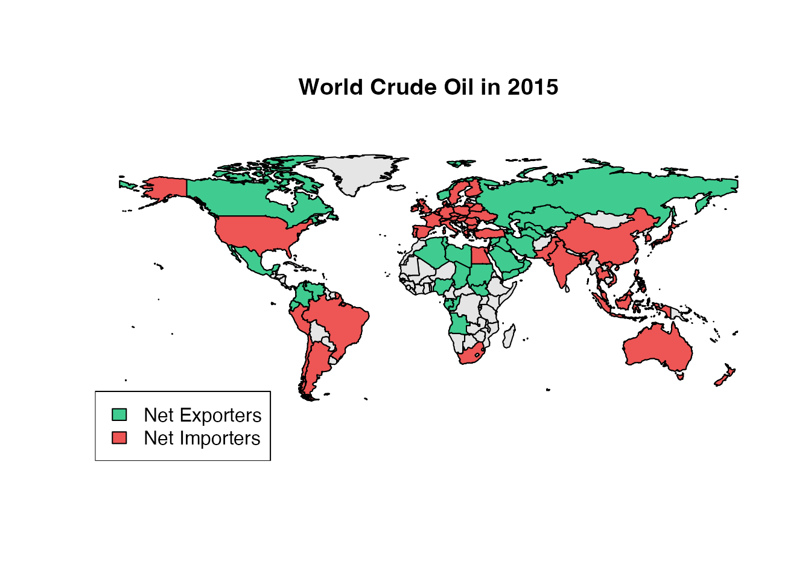

Introduction to MazamaSpatialUtils
Mazama Science
Nov 04, 2022
Source:vignettes/MazamaSpatialUtils.Rmd
MazamaSpatialUtils.RmdBackground
The MazamaSpatialUtils package was created to regularize work with spatial data. Many sources of shapefile data are available and can be used to make beautiful maps in R. Unfortunately, the data attached to these datasets, even when fairly complete, often lacks standardized identifiers such as the ISO 3166-1 alpha-2 encodings for countries. Maddeningly, even when these ISO codes are used, the dataframe column in which they are stored does not have a standardized name. It may be called “ISO” or “ISO2” or “alpha” or “COUNTRY” or any of a dozen other names we have seen.
While many mapping packages provide “natural” naming of countries, those who wish to develop operational, GIS-like systems need something that is both standardized and language-independent. The ISO 3166-1 alpha-2 encodings have emerged as the de facto standard for this sort of work. In similar fashion, ISO 3166-2 alpha-2 encodings are available for the next administrative level down – state/province/oblast, etc. For time zones, the de facto standard is the set of Olson time zones used in all UNIX systems.
The main goal of this package is to create an internally standardized
set of spatial data that can be used in various projects. Along with
three built-in datasets, this package provides convert~()
functions for other spatial datasets of interest. These convert
functions all follow the same recipe:
- download spatial data into a standard directory
- convert spatial data into a sf simple features data frame
- modify the dataframe so that it adheres to package internal standards
Other datasets can be added following the same procedure.
The ‘package internal standards’ are very simple.
- Every spatial dataset must contain the following columns:
- polygonID – unique identifier for each polygon
- countryCode – country at centroid of polygon (ISO 3166-1 alpha-2)
- Spatial datasets with time zone data must contain the following column:
- timezone – Olson timezone
- Spatial datasets at scales smaller than the nation-state should contain the following column:
- stateCode – ‘state’ at centroid of polygon (ISO 3166-2 alpha-2)
If other columns contain these data, those columns must be renamed or duplicated with the internally standardized name. This simple level of consistency makes it possible to generate maps for any data that is ISO encoded. It also makes it possible to create functions that return the country, state or time zone associated with a set of locations.
Functionality
The core functionality for which this package was developed is determining spatial information associated with a set of locations.
Current functionality includes the following:
-
getCountry~(longitude, latitude, ...)– returns names, ISO codes and other country-level data at specified locations -
getState~(longitude, latitude, ...)– returns names, ISO codes and other state-level at specified locations -
getTimezone(longitude, latitude, ...)– returns Olson time zones and other data at specified locations -
getUSCounty(longitude, latitude, ...)– returns names and other county-level data at specified locations
A generic getSpatialData(longitude, latitude, ...)
returns a dataframe whose rows are associated with specified locations.
This function can be used with newly converted simple features data
frames.
For those working with geo-located data, the ability to enhance location metadata with this information can be extremely helpful.
Standard Datasets and Setup
When using MazamaSpatialUtils, always run
setSpatialDataDir(<spatial_data_directory>) first.
This sets the directory where spatial data will be installed and from
which it will be loaded. This can be a directory on a user’s personal
computer or perhaps a remotely mounted disk if huge spatial datasets are
going to be used.
MazamaSpatialUtils has three built-in spatial datasets:
-
SimpleCountries– country outlines -
SimpleCountriesEEZ– country outlines including Exclusive Economic Zones over water -
SimpleTimezones– time zones
Version 0.8 of the package is built around the three built-in datasets and several other core datasets that may be installed including:
-
20 MB EEZCountries– country boundaries including Exclusive Economic Zones -
5 MB EPARegions– US EPA region boundaries -
7 MB GACC– Geographic Area Coordination Center (GACC) boundaries -
5 MB NaturalEarthAdm0– country level boundaries
-
14 MB NaturalEarthAdm1– state/province/oblast level boundaries
-
99 MB OSMTimezones– OpenStreetMap time zones -
3 MB TMWorldBorders– high resolution country level boundaries -
7 MB USCensus116thCongress– 2019 US congressional districts -
34 MB USCensusCBSA– US Core Based Statistical Areas -
12 MB USCensusCounties– US county level boundaries -
3 MB USCensusStates– US state level boundaries -
23 MB WeatherZones– US NWS public weather forecast zones
Install these one at a time with:
setSpatialDataDir('~/Data/Spatial_0.8')
installSpatialData("<datasetName>")Once datasets have been installed, loadSpatialData() can
be used load datasets found in the SpatialDataDir that
match a particular pattern, e.g:
loadSpatialData('USCensusStates')
loadSpatialData('USCensusCounties')
getCountry() and getCountryCode()
These two functions are used for assigning countries to one or many
locations. getCountry() returns English country names and
getCountryCode() returns the ISO-3166 two character country
code. Both functions can be passed allData = TRUE which
returns a dataframe with more information on the countries. You can also
specify countryCodes = c(<codes>) to speedup
searching by restricting the search to polygons associated within those
countries.
These functions use the package-internal SimpleCountries
dataset which can be used without loading any additional datasets.
In this example we’ll find the countries underneath a vector of points:
## Loading required package: sf## Linking to GEOS 3.11.0, GDAL 3.5.3, PROJ 9.1.0; sf_use_s2() is TRUE
longitude <- c(-122.3, -73.5, 21.1, 2.5)
latitude <- c(47.5, 40.75, 52.1, 48.5)
# Get countries/codes associated with locations
getCountry(longitude, latitude)## [1] "United States" "United States" "Poland" "France"
getCountryCode(longitude, latitude)## [1] "US" "US" "PL" "FR"
# Review all available data
getCountry(longitude, latitude, allData = TRUE)## countryCode countryName polygonID
## 1 US United States 113
## 2 US United States 113
## 3 PL Poland 205
## 4 FR France 167
getState() and getStateCode()
Similar to above, these functions return state names and ISO 3166
codes. They also take the same arguments. Adding the
countryCodes argument is more important for
getState() and getStateCode() because the
NaturalEarthAdm1 dataset is fairly large.
These functions require installation of the large
NaturalEarthAdm1 dataset which is not distributed with the
package.
(The next block of code is not evaluated in the vignette.)
# Load states dataset if you haven't already
loadSpatialData('NaturalEarthAdm1')
# Get country codes associated with locations
countryCodes <- getCountryCode(longitude, latitude)
# Pass the countryCodes as an argument to speed everything up
getState(longitude, latitude, countryCodes = countryCodes)
getStateCode(longitude, latitude, countryCodes = countryCodes)
# This is a very detailed dataset so we'll grab a few important columns
states <- getState(longitude, latitude, allData = TRUE, countryCodes = countryCodes)
states[c('countryCode', 'stateCode', 'stateName')]
getTimezone()
Returns the Olsen time zone where the given points are located.
Arguments are the same as the previous functions.
allData = TRUE will return other useful information such as
the UTC Offset.
These functions use the package-internal SimpleTimezones
dataset which can be used without loading any additional datasets.
# Find the time zones the points are in
getTimezone(longitude, latitude)## [1] "America/Los_Angeles" "America/New_York" "Europe/Warsaw"
## [4] "Europe/Paris"
# Get country codes associated with locations
countryCodes <- getCountryCode(longitude, latitude)
# Pass the countryCodes as an argument to potentially speed things up
getTimezone(longitude, latitude, countryCodes = countryCodes)## [1] "America/Los_Angeles" "America/New_York" "Europe/Warsaw"
## [4] "Europe/Paris"
# Review all available data
getTimezone(longitude, latitude, allData = TRUE, countryCodes = countryCodes)## timezone countryCode countryCodes timezone_STD_abbreviation
## 1 America/Los_Angeles US US PST
## 2 America/New_York US US EST
## 3 Europe/Warsaw PL PL CET
## 4 Europe/Paris FR FR, MC CET
## timezone_DST_abbreviation UTC_STD_offset UTC_DST_offset notes polygonID
## 1 PDT -8 -7 133
## 2 EDT -5 -4 152
## 3 CEST 1 2 369
## 4 CEST 1 2 348
getUSCounty()
Returns the US County which name pairs of coordinates fall in. The
arguments are similar as above except that stateCodes=c()
is used instead of countryCodes=c() since this dataset is
US specific.
(The next block of code is not evaluated in the vignette.)
# Load counties dataset if you haven't already
loadSpatialData("USCensusCounties")
# New dataset of points only in the US
stateCodes <- getStateCode(longitude,latitude)
# Optionally pass the stateCodes as an argument to speed everything up
getUSCounty(longitude, latitude, stateCodes = stateCodes)
getUSCounty(longitude, latitude, allData = TRUE, stateCodes = stateCodes)Timezone Map
While identifying the states, countries and time zones associated with a set of locations is important, we can also generate some quick eye candy with these datasets. Let’s color the time zones by the data variable ‘UTC_offset’
# Assign time zones polygons an index based on UTC_offset
colorIndices <- .bincode(SimpleTimezones$UTC_STD_offset, breaks = seq(-12.5,12.5,1))
# Color our time zones by UTC_offset
plot(SimpleTimezones$geometry, col = rainbow(25)[colorIndices])
title(line = 0, 'Timezone Offsets from UTC')
Working with ISO 3166-1 Encoded Data
On of the main reasons for ensuring that our spatial datasets use ISO encoding is that it makes it easy to generate plots with any datasets that use that encoding. Here is a slightly more involved example using Energy data from the British Petroleum Statistical Review that has been ISO-encoded.
library(sf) # For spatial plotting
# Read in ISO-encoded oil production and consumption data
prod <- read.csv(url('http://mazamascience.com/OilExport/BP_2016_oil_production_bbl.csv'),
skip = 6, stringsAsFactors = FALSE, na.strings = 'na')
cons <- read.csv(url('http://mazamascience.com/OilExport/BP_2016_oil_consumption_bbl.csv'),
skip = 6, stringsAsFactors = FALSE, na.strings = 'na')
# Only work with ISO-encoded columns of data
prodCountryCodes <- names(prod)[ stringr::str_length(names(prod)) == 2 ]
consCountryCodes <- names(cons)[ stringr::str_length(names(cons)) == 2 ]
# Use the last row (most recent data)
lastRow <- nrow(prod)
year <- prod$YEAR[lastRow]
# Neither dataframe contains all countries so create four categories based on the
# amount of information we have: netExporters, netImporters, exportOnly, importOnly
sharedCountryCodes <- intersect(prodCountryCodes,consCountryCodes)
net <- prod[lastRow, sharedCountryCodes] - cons[lastRow, sharedCountryCodes]
# Find codes associated with each category
netExportCodes <- sharedCountryCodes[net > 0]
netImportCodes <- sharedCountryCodes[net <= 0]
exportOnlyCodes <- setdiff(prodCountryCodes,consCountryCodes)
importOnlyCodes <- setdiff(consCountryCodes,prodCountryCodes)
# Create a logical 'mask' associated with each category
netExportMask <- SimpleCountries$countryCode %in% netExportCodes
netImportMask <- SimpleCountries$countryCode %in% netImportCodes
onlyExportMask <- SimpleCountries$countryCode %in% exportOnlyCodes
onlyImportMask <- SimpleCountries$countryCode %in% importOnlyCodes
color_export = '#40CC90'
color_import = '#EE5555'
color_missing = 'gray90'
# Base plot (without Antarctica)
notAQ <- SimpleCountries$countryCode != 'AQ'
plot(SimpleCountries[notAQ,]$geometry, col = color_missing)
plot(SimpleCountries[netExportMask,]$geometry, col = color_export, add = TRUE)
plot(SimpleCountries[onlyExportMask,]$geometry, col = color_export, add = TRUE)
plot(SimpleCountries[netImportMask,]$geometry, col = color_import, add = TRUE)
plot(SimpleCountries[onlyImportMask,]$geometry, col = color_import, add = TRUE)
legend(
'bottomleft',
legend = c('Net Exporters','Net Importers'),
fill = c(color_export,color_import)
)
title(line = 0, paste('World Crude Oil in', year))